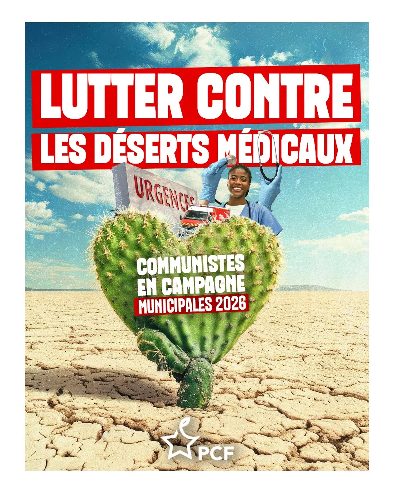

Publication relayée par le PCF 79
Le PCF défend l’égalité d’accès aux soins sur tous les territoires
Date de mise à jour indiquée par Facebook · 18 février 2026
Texte de la publication · PCF national
🩺 Sur tous les territoires, garantir les mêmes droits à la santé
L’accès aux soins n’est pas un privilège.
C’est un droit fondamental, partout, pour toutes et tous.
Face aux déserts médicaux qui frappent 87 % des territoires, aux urgences saturées et à la crise de l’hôpital public, les communes, malgré les contraintes budgétaires de plus en plus fortes, sont souvent le dernier rempart pour garantir une santé publique de proximité.
➡️ Les communistes portent une ambition :
développer une médecine sociale, tournée vers les habitant·es et les territoires, en lien étroit avec le service public hospitalier. Multiplier les centres de santé municipaux, recruter des médecins salariés, renforcer la prévention et la médecine scolaire, articuler la santé avec les politiques de logement, d’urbanisme, de transports et de solidarité.
Lutter contre les déserts médicaux, c’est faire le choix de communes qui protègent, investissent et organisent l’accès aux soins, sans concurrence ni logique de profit.
Même territoire, mêmes droits : pour une santé publique, populaire et accessible.
En 2026, faisons le choix de communes qui soignent et émancipent.
Communistes en campagne - Municipales 2026

Sources
PCF national · publication relayée par le PCF 79 · bibliothèque Facebook · AR-0002-FB-00863
À lire aussi · Le PCF propose de développer les centres de santé publics